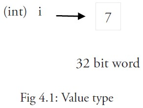
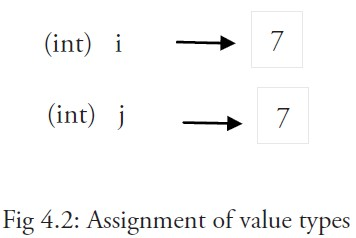
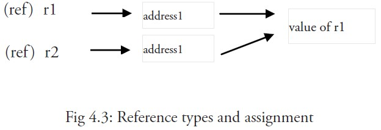

Go言語の変数
変数は数学に由来し、コンピュータ言語において計算結果を保存したり、値を表す抽象的な概念です。
変数は変数名によってアクセスできます。
Go言語の変数名は文字、数字、アンダースコアで構成され、最初の文字は数字にできません。
変数を宣言する一般的な形式は、varキーワードを使用することです：
var identifier type
一度に複数の変数を宣言できます：
var identifier1, identifier2 type
実例
import "fmt"
func main() {
var a string = "Runoob"
fmt.Println(a)
var b, c int = 1, 2
fmt.Println(b, c)
}
上記の実例の出力結果は次のとおりです：
Runoob 1 2
変数宣言
1つ目、変数の型を指定します。初期化しない場合、変数はデフォルトでゼロ値になります。。
var v_name v_type v_name = value
ゼロ値とは、変数が初期化されていないときにシステムがデフォルトで設定する値です。
実例
import "fmt"
func main() {
// 変数を宣言して初期化する
var a = "RUNOOB"
fmt.Println(a)
// 初期化しない場合はゼロ値
var b int
fmt.Println(b)
// boolのゼロ値はfalse
var c bool
fmt.Println(c)
}
上記の実例の実行結果は次のとおりです：
RUNOOB 0 false
数値型（complex64/128を含む）は0
-
ブール型はfalse
-
文字列は""（空文字列）
以下のいくつかの型はnil：
var a *int var a []int var a map[string] int var a chan int var a func(string) int var a error // error 是接口
実例
import "fmt"
func main() {
var i int
var f float64
var b bool
var s string
fmt.Printf("%v %v %v %q\n", i, f, b, s)
}
出力結果は次のとおりです：
0 0 false ""
2つ目、値に基づいて変数の型を自動的に判定します。
var v_name = value
実例
import "fmt"
func main() {
var d = true
fmt.Println(d)
}
出力結果は次のとおりです：
true
3つ目、変数がすでにvarで宣言されている場合、再度:=変数を宣言するとコンパイルエラーが発生します。形式：
v_name := value
例：
var intVal int intVal :=1 // 这时候会产生编译错误，因为 intVal 已经声明，不需要重新声明
次の文を直接使用すればよいです：
intVal := 1 // 此时不会产生编译错误，因为有声明新的变量，因为 := 是一个声明语句
intVal := 1次と同等です：
var intVal int intVal =1
var f string = "Runoob" を f := "Runoob" と簡略化できます：
実例
import "fmt"
func main() {
f := "Runoob" // var f string = "Runoob"
fmt.Println(f)
}
出力結果は次のとおりです：
Runoob
複数変数の宣言
//类型相同多个变量, 非全局变量
var vname1, vname2, vname3 type
vname1, vname2, vname3 = v1, v2, v3
var vname1, vname2, vname3 = v1, v2, v3 // 和 python 很像,不需要显示声明类型，自动推断
vname1, vname2, vname3 := v1, v2, v3 // 出现在 := 左侧的变量不应该是已经被声明过的，否则会导致编译错误
// 这种因式分解关键字的写法一般用于声明全局变量
var (
vname1 v_type1
vname2 v_type2
)
実例
import "fmt"
var x, y int
var ( // このような因数分解キーワードの書き方は、通常グローバル変数の宣言に使用されます
a int
b bool
)
var c, d int = 1, 2
var e, f = 123, "hello"
//この宣言形式を付けない書き方は関数本体内でのみ使用できます
//g, h := 123, "hello"
func main(){
g, h := 123, "hello"
fmt.Println(x, y, a, b, c, d, e, f, g, h)
}
上記の実例の実行結果は次のとおりです：
0 0 0 false 1 2 123 hello 123 hello
値型と参照型
int, float, bool, stringなどの基本型はすべて値型に属し、これらの型の変数はメモリ内に存在する値を直接指し示します：

等号（=）を使用して=ある変数の値を別の変数に代入する場合、例えば：j = i実際にはメモリ内でiの値をコピーしています：

&iを使用して変数iのメモリアドレスを取得できます。例：0xf840000040（アドレスは毎回異なる場合があります）。
値型の変数は通常スタックに格納されます。特にローカル変数の場合です。値型の変数の値が関数スコープの外部で使用される必要がある場合、Goはそれをヒープメモリに割り当てます。
メモリアドレスはマシンによって異なります。同じプログラムでも異なるマシンで実行するとメモリアドレスが異なる場合があります。各マシンには異なるメモリレイアウトがあり、位置の割り当ても異なる可能性があるためです。
より複雑なデータは通常、複数のワードを必要とし、これらのデータは一般的に参照型で保存されます。
参照型の変数r1が格納するのは、r1の値が存在するメモリアドレス（数値）、またはメモリアドレス内の最初のワードが存在する位置です。

このメモリアドレスはポインタと呼ばれ、このポインタは実際には別の何らかの値の中にも格納されています。
同じ参照型のポインタが指す複数のワードは、連続したメモリアドレス内に存在する場合があり（メモリレイアウトが連続している）、これは計算効率が最も高い格納形式です。また、これらのワードをメモリ内に分散して配置し、各ワードが次のワードが存在するメモリアドレスを示すこともできます。
代入文 r2 = r1 を使用する場合、参照（アドレス）のみがコピーされます。
r1の値が変更された場合、この値のすべての参照は変更後の内容を指すことになり、この例ではr2も影響を受けます。
短縮形式、:= 代入演算子を使用
変数の初期化時に変数の型を省略し、システムに自動推論させることができることは知っています。宣言文にvarキーワードを書くのは実は少し冗長なので、a := 50 や b := false のように簡略化できます。
aとbの型（intとbool）はコンパイラによって自動的に推論されます。
これは変数を使用する際の推奨形式ですが、関数本体内でのみ使用でき、グローバル変数の宣言と代入には使用できません。演算子 := を使用すると、新しい変数を効率的に作成でき、これを初期化宣言と呼びます。
注意事項
同じコードブロック内では、同じ名前の変数に対して初期化宣言を再度使用することはできません。例えば、a := 20 は許可されず、コンパイラは no new variables on left side of := というエラーを表示します。ただし、a = 20 は同じ変数に新しい値を代入することなので許可されます。
変数aを定義する前に使用すると、undefined: a というコンパイルエラーが発生します。
ローカル変数を宣言したにもかかわらず同じコードブロック内で使用しない場合も、同様にコンパイルエラーが発生します。例えば、次の例の変数aの場合：
実例
import "fmt"
func main() {
var a string = "abc"
fmt.Println("hello, world")
}
このコードをコンパイルしようとするとエラーが発生しますa declared but not used。
さらに、単にaに代入するだけでは不十分で、この値は使用されなければなりません。そのため、
fmt.Println("hello, world", a)を使用するとエラーが解消されます。
ただし、グローバル変数は宣言だけで使用しないことが許可されています。 同じ型の複数の変数は同じ行で宣言できます。例：
var a, b, c int
複数の変数に同じ行で代入できます。例：
var a, b int var c string a, b, c = 5, 7, "abc"
上記の行は変数a、b、cがすべて宣言済みであることを前提としています。そうでない場合は、次のように使用する必要があります：
a, b, c := 5, 7, "abc"
右側の値は左側の変数に同じ順序で代入されるため、aの値は5、bの値は7、cの値は"abc"です。
これは「並行」または「同時」代入と呼ばれます。
2つの変数の値を交換したい場合は、単純にa, b = b, aを使用できます。2つの変数の型は同じである必要があります。
空白識別子 _ は値を捨てるためにも使用されます。例えば、値5は：_, b = 5, 7 で捨てられます。
_ は実際には書き込み専用の変数であり、その値を取得することはできません。これは、Go言語では宣言されたすべての変数を使用する必要があるためですが、関数から返されるすべての戻り値を使用する必要がない場合があるからです。
並行代入は、関数が複数の戻り値を返す場合にも使用されます。例えば、ここでのvalとエラーerrはFunc1関数の呼び出しによって同時に取得されます：val, err = Func1(var1)。
その他の拡張